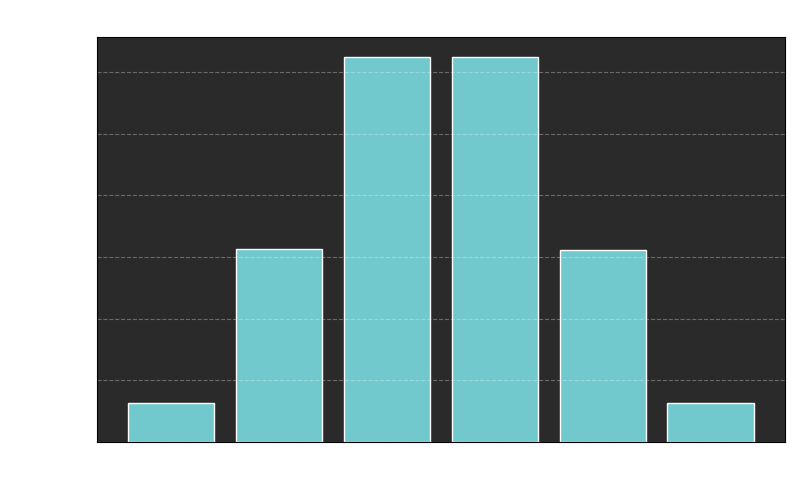
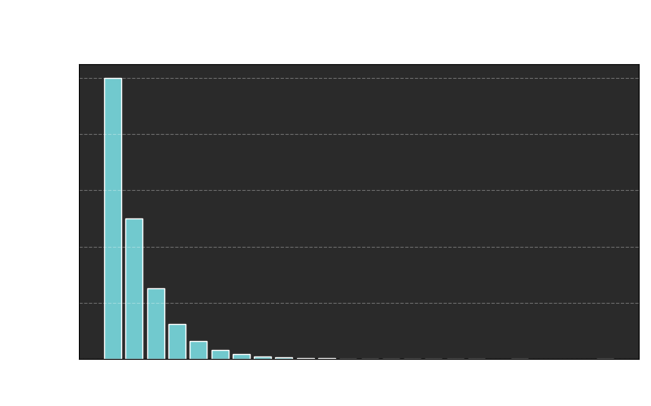

Some times ago, while designing a custom CPU emulator, I stumbled into a math problem: I needed to pick random whole numbers in any given range using only a (boolean) value that can casually become 0 or 1 if asked.
Think of this random, two-sided value as a coin that can be tossed on its head (1) or tail (0), and imagine ranges from 0 to n as an n+1 sided dice.
This simplification works because extracting a casual number from 20 to 25 can be thought as extracting it from 0 to 5 and adding a fixed offset, like 20 in this case.
First attempt, coin tosses as increments
Let's try to simulate a classic six sided dice. Could we toss 5 coins and take the number of heads +1 to get numbers from 1 to 6?
I tested this approach with one million "dice" made like this and this is the result:

Clearly the distribution of outcomes is uneven (and it can be proven to be binomial). We should have expected this because if we toss 5 coins, according to the rule we chose, there happens to be:
- only one way to get 1 (all heads),
- 5 ways to get 2 (every combination with 1 head and 4 tails),
- 10 ways to get 3 (every combination with 2 heads and 3 tails),
- 10 ways to get 4 (every combination with 3 heads and 2 tails),
- 5 ways to get 5 (every combination with 4 head and 1 tails),
- only one way to get 6 (all tails).
Another approach, coin tosses as choices
If a coin toss is a casual fair choice between heads or tails (2 possible states), how can we extend this perfect fairness to more possible states, so more possible numbers?
Suppose we need to pick a number between 0 and 7 (8 sided dice). The idea is simple, we can chain choices like this:
1° first toss, we choose either [0,1,2,3] or [4,5,6,7]
/ \
/ \
/ \
2° 2° second toss, we can choose [0,1] or [2,3], [4, 5] or [6, 7]
/ \ / \
3° 3° 3° 3° third toss, we choose 0 or 1, 2 or 3, 4 or 5, 6 or 7
/ \ / \ / \ / \
0 1 2 3 4 5 6 7 (final states)
This is a binary tree, because we start from the initial range, then we can branch left or right at every step in our path, finally reaching a number.
A path in a binary tree is equivalent to a number written in binary, because 0 can be thought as right and 1 as left, so we can treat coin tosses as binary digits to get a random number.
With this very efficient process we halve the number of choices left to make every time we make one (logarithmic growth of choices as the number of final states grows).
There's a problem
As it is, we can only have dices whose number of faces is a power of two.
For example, to simulate a 6 sided dice, we can toss 3 coins like before, as 2^3 (8) is the smallest power of two larger than 6, and repeat if the result is larger than 5.
There's no way around it without increasing the amount of coins used or having a biased distribution.
In the worst case, the number of dice rolls rejected tends to 50%.

This isn’t as bad as it looked on paper: in a million dice rolls, 99% of rolls produced a valid number after 6 retries or fewer, 90% within 3 retries, and 50% after just 1 retry.
This shows that the method is not only elegant and simple, but also surprisingly efficient.